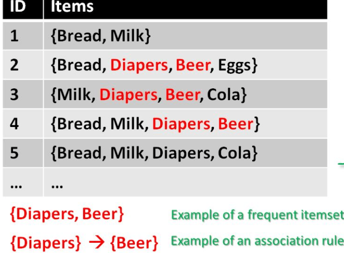

On Amazon’s product page, users are presented with related products, under the heading “Frequently bought together” and Customers who bought this item also bought.
Knowing what your customers tend to buy together can help with marketing efforts and cause you to optimize your store’s layout for conversion.
There are several algorithmic implementations for the phenomenon described above, one we would be exploring in this example is the apriori algorithm.
In simple language, the algorithm is used to find frequent patterns in a database, in the example we would be looking at, the algorithm would tell us what items customers frequently buy together by generating a set of rules called Association Rules.
Observe the image below. Each ID shows the items bought in that transaction. You can see that Diaper is bought with Beer in three transactions. 
Before we talk further on how the algorithm works, lets quickly take a glance at the data we would be using for this example:
We would explore data from an online grocery store. The table below shows the first 10 observations and contains two variables:
1.order_ID: A unique ID that represents the all the items purchased for each transaction
2.Product: A description of the actual items that were bought.
library(tidyverse)
library(arules)
library(arulesViz)
transactions <- read_csv("data.csv",
col_types = cols(order_id = col_character()))
transactions %>%
rename(OrderID = order_id, Product = product_id) %>%
head(10)## # A tibble: 10 x 2
## OrderID Product
## <chr> <chr>
## 1 837080 Unsweetened Almondmilk
## 2 837080 Fat Free Milk
## 3 837080 Turkey
## 4 837080 Caramel Corn Rice Cakes
## 5 837080 Guacamole Singles
## 6 837080 HUMMUS 10OZ WHITE BEAN EAT WELL
## 7 837080 Tryst Black Bean Hummus
## 8 837080 Organic Harvest Vegetable Hummus
## 9 837080 Maple & Brown Sugar High Fiber Instant Oatmeal
## 10 837080 Olive Oil & Vinegar Dressing